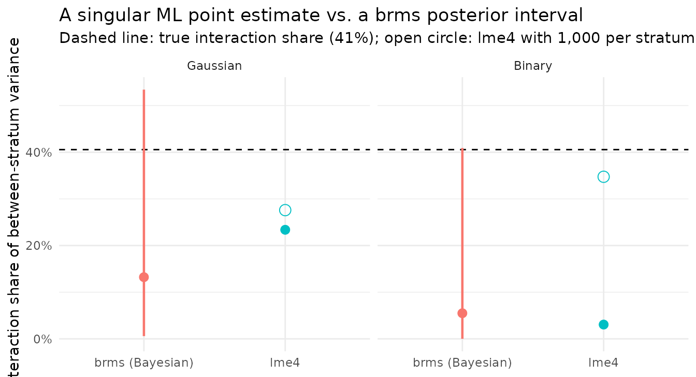

Bayesian MAIHDA for sparse intersections
Hamid Bulut
2026-10-28
Source:vignettes/bayesian_sparse_maihda.Rmd
bayesian_sparse_maihda.RmdSparse intersectional cells
Intersectional MAIHDA decomposes the between-stratum variation into an additive part (the constituent dimensions’ main effects) and an interaction part (the model-implied departure from additivity). That conclusion is defensible only when each intersectional stratum is populated well enough to estimate its effect. In practice it often is not. Crossing several dimensions multiplies the strata while the sample size stays fixed, so cell counts fall away quickly. Estimating an interaction variance from cells like these is hard.
A dataset with a known interaction
maihda_sparse_data is simulated for exactly that: 4
dimensions form 36 intersectional strata, and the interaction accounts
for 41% of the variance between the 36 stratum effects
– on a Gaussian outcome y and on the latent scale of a
binary outcome event (?maihda_sparse_data
gives the split). Individuals are allocated to strata unevenly,
reproducing the skewed cell sizes of real survey data.
data(maihda_sparse_data)
d <- maihda_sparse_data
cells <- table(interaction(d$gender, d$ethnicity, d$education, d$age_group, drop = TRUE))
summary(as.numeric(cells)) # cell-size distribution
#> Min. 1st Qu. Median Mean 3rd Qu. Max.
#> 1.000 4.000 6.000 6.667 9.250 17.000
sum(cells < 5) # how many strata have < 5 people
#> [1] 12
attr(d, "truth")$gaussian$interaction_share # the true interaction share: 0.41
#> [1] 0.4056439A third of the strata hold fewer than five individuals. This is not an unusual case, as it is often the situation once more than two or three dimensions are crossed, and it is precisely where maximum likelihood becomes unreliable.
What lme4 reports
We fit the crossed-dimensions decomposition with
engine = "lme4" on both outcomes.
m_g <- maihda(y ~ 1 + (1 | gender:ethnicity:education:age_group),
data = d, decomposition = "crossed-dimensions", engine = "lme4")
m_b <- maihda(event ~ 1 + (1 | gender:ethnicity:education:age_group),
data = d, decomposition = "crossed-dimensions",
engine = "lme4", family = "binomial")
c(gaussian = m_g$decomposition$interaction_share,
binary = m_b$decomposition$interaction_share)
#> gaussian binary
#> 0.23380215 0.03061958
# The variance of each dimension and of the interaction
round(rbind(
gaussian = c(m_g$decomposition$per_dim, interaction = m_g$decomposition$interaction_var),
binary = c(m_b$decomposition$per_dim, interaction = m_b$decomposition$interaction_var)
), 3)
#> gender ethnicity education age_group interaction
#> gaussian 0 0.034 0.203 0.107 0.105
#> binary 0 0.000 0.501 0.190 0.022In both fits maximum likelihood has placed a dimension’s variance at zero (gender’s in the Gaussian fit; gender’s and ethnicity’s in the binary one), and the interaction variance is positive in both. The interaction share is understated all the same, at 23% for the Gaussian outcome and 3% for the binary one, against a true 41%.
Only part of that gap is the sparse cells. The share is the
interaction variance over the sum of the four dimension variances and
its own, and a dimension’s variance, estimated from two or three levels,
describes the population its levels come from: together the four are
larger than the spread of the main effects among the 36 strata. Fitted
to the same stratum effects with 1,000 individuals in every stratum,
lme4 puts the share at 28% for the Gaussian outcome and 35% for the
binary one. The two outcomes’ effects differ only in scale: the gap
between these two is that of REML (Gaussian) and maximum likelihood
(binary). The Gaussian 23% is close to 28%; on the binary outcome the
sparse cells make a substantial interaction look absent. Neither
estimate comes with an interval in this output. Asked for one
(bootstrap = TRUE), maihda() simulates
outcomes from the fitted model and refits it; the interval for the
interaction share then runs from 0% to about 90% on the Gaussian outcome
and over the whole range on the binary one. The sparse cells barely
constrain the split. The draws are simulated from the fit itself, so
none of them has a gender effect.
What brms adds: posterior uncertainty
Refitting with engine = "brms" and a weakly-informative
prior on the random-effect standard deviations changes the output in one
important respect: the posterior yields a credible interval in place of
a single number. No standard deviation is reported at zero, since each
is a posterior median, which is above zero whatever the prior; the
normal(0, 0.5) prior has its mode at zero and pulls the
standard deviations toward it. The call is shown but not evaluated here
(brms requires Stan and several minutes; see the note on
precomputation below).
set.seed(1)
m_g_brms <- maihda(
y ~ 1 + (1 | gender:ethnicity:education:age_group),
data = d, decomposition = "crossed-dimensions", engine = "brms",
prior = brms::set_prior("normal(0, 0.5)", class = "sd"),
chains = 4, iter = 2000, warmup = 1000, cores = 4,
control = list(adapt_delta = 0.97)
)
m_g_brms$decomposition$interaction_share
m_g_brms$decomposition$interaction_share_ciThe cached posterior summaries:
bg <- pc$brms$gaussian; bb <- pc$brms$binary
data.frame(
outcome = c("Gaussian", "Binary"),
true_share = c(pc$truth$gaussian$interaction_share, pc$truth$binary_latent$interaction_share),
brms_share = c(bg$share, bb$share),
ci_low = c(bg$ci[1], bb$ci[1]),
ci_high = c(bg$ci[2], bb$ci[2]),
max_rhat = c(bg$diag$max_rhat, bb$diag$max_rhat),
divergences = c(bg$diag$divergences, bb$diag$divergences)
)
#> outcome true_share brms_share ci_low ci_high max_rhat divergences
#> 1 Gaussian 0.4056439 0.13223468 0.005891153 0.5341915 1.006180 0
#> 2 Binary 0.4056439 0.05492321 0.000119476 0.4090562 1.001815 0The posterior median is low as well: brms reports the
same ratio of variance parameters, which is not the 41% of the drawn
strata, and with two or three levels its value depends on the prior on
the dimensions’ standard deviations. The credible interval, however,
runs from near zero to past the true value, reflecting posterior
uncertainty about the interaction share. This is the substantive
difference. Maximum likelihood’s default output is a single point;
brms reports an interval that includes the true share in
this simulation and makes the uncertainty explicit. The diagnostics
(max_rhat close to 1, no divergent transitions) suggest the
posterior is well-sampled.
These summaries also depend on the prior on the random-effect
standard deviations, normal(0, 0.5) above and
normal(0, 1) for the binary fit: each of the four
dimensions has two or three levels, and the variance of such a dimension
follows that prior (see the caveats in
vignette("cross_classified", package = "MAIHDA")). Refitted
under brms’s default prior instead, the interaction share is about 3%
for both outcomes, and the intervals end between 25% and 31% (the upper
limit moves with the sampler’s seed), short of the true 41%.
Comparison
fig <- data.frame(
outcome = factor(rep(c("Gaussian", "Binary"), each = 2), levels = c("Gaussian", "Binary")),
method = rep(c("lme4", "brms (Bayesian)"), 2),
share = c(pc$lme4$gaussian$share, pc$brms$gaussian$share,
pc$lme4$binary$share, pc$brms$binary$share),
lo = c(NA, pc$brms$gaussian$ci[1], NA, pc$brms$binary$ci[1]),
hi = c(NA, pc$brms$gaussian$ci[2], NA, pc$brms$binary$ci[2])
)
truth <- pc$truth$gaussian$interaction_share
large <- data.frame(
outcome = factor(c("Gaussian", "Binary"), levels = c("Gaussian", "Binary")),
method = "lme4",
share = c(pc$lme4_large$gaussian$share, pc$lme4_large$binary$share)
)
ggplot(fig, aes(method, share, colour = method)) +
geom_hline(yintercept = truth, linetype = "dashed") +
geom_pointrange(aes(ymin = lo, ymax = hi), na.rm = TRUE, linewidth = 0.8) +
geom_point(size = 2.5) +
geom_point(data = large, shape = 1, size = 3.5) +
facet_wrap(~ outcome) +
scale_y_continuous("Interaction share of between-stratum variance",
labels = function(x) paste0(round(100 * x), "%")) +
labs(x = NULL, colour = NULL,
title = "A singular ML point estimate vs. a brms posterior interval",
subtitle = paste0("Dashed line: true interaction share (", pct(truth),
"); open circle: lme4 with 1,000 per stratum")) +
theme_minimal() + theme(legend.position = "none")
Both point estimates fall below the true value and below lme4’s share
with ample data (the open circles). They differ in what is reported
alongside the point. The brms credible interval spans the
true 41%, whereas lme4 reports a single value unless it is
bootstrapped. Reading the lme4 point at face value (an
interaction of roughly 3–23%) is the error the singular fit invites.
Why the interval, not the point, is what changes
The per-stratum effects (the stratum random intercepts) are similar
under the two engines as both apply partial pooling, shrinking
thinly-estimated strata toward the additive prediction. What differs is
the treatment of uncertainty. Maximum likelihood commits to a single
variance decomposition and gives no interval for it unless one is
bootstrapped from that decomposition. brms propagates the
full posterior, so the interaction share is accompanied by an interval
whose width reflects how little the sparse cells constrain it.
Summarising the posterior by its point discards exactly the information
that matters: the degree of uncertainty. When intersectional cells are
sparse, a regularised Bayesian fit with an explicit interval is the more
defensible summary, read with the priors it rests on.
The two-model PCV is the exception.
maihda(engine = "brms") with the default
decomposition = "two-model" fits the null and the adjusted
model separately, so there is no joint posterior to take a PCV interval
from. The PCV it reports is a point estimate, one minus the ratio of the
two models’ posterior-median between-stratum variances, and with few
strata it is understated – the reverse of the maximum-likelihood PCV,
which is overstated (see ?calculate_pcv).